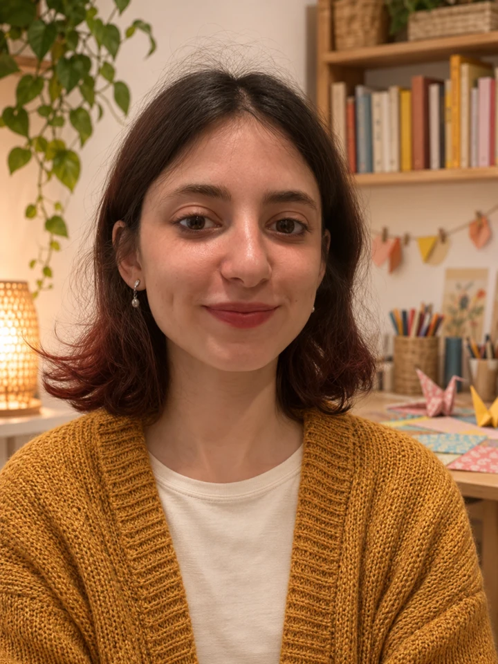

Tanıştığımıza sevindim.Merhaba, ben Hafsa.
Bir kâğıttan mahalle, bir kukladan kocaman bir hikâye çıkabilir.
Yaratıcı oyunlar, hikâyeler ve gündelik sohbetlerle çocuğunuzun merakına eşlik ediyorum. Bazen birlikte üretir, bazen bir hikâyenin peşinden gider, bazen de oyuna yeni bir dil ekleriz.
Marmara Üniversitesi, Fransızca Mütercim ve Tercümanlık bölümünden mezunum (2020-2025). Dil ve kültür merakımı oyunlara taşıyorum.
Hafsa Karabulut
Bir tanışma görüşmesi yapalımYaratıcı oyun & el becerisi
Kâğıt, renk ve gündelik malzemelerle birlikte bir şeyler üretmek.
Hikâye & drama
Bir kuklaya ses, bir resme hikâye, bir başlangıca başka bir son bulmak.
Oyun içinde iki dil
İngilizce ve Fransızcayı renklerle, selamlaşmayla ve küçük diyaloglarla keşfetmek.
Okul çağında birlikte zaman
Ödev öncesi veya sonrası, ilgi alanlarına göre oyun ve dil eşliği.
Oyunun dili
bazen değişir.
Bir evin kapısını çalarken “Bonjour!”, sırayı verirken “It’s your turn!”. İngilizce ve Fransızca, küçük hikâyelere böyle karışabilir.
Dil eşliğini konuşalımBonjour !Merhaba!
Shall we make a story?Bir hikâye kuralım mı?
À toi de jouer !Şimdi sıra sende!
İlk oyun,
bir merhabayla başlar.
Çocuğunuzun neleri sevdiğini konuşalım.
Birlikte nasıl zaman geçirebileceğimize bakalım.
Hafsa Karabulut
+90 551 712 88 94E-posta yazınKadıköy, Koşuyolu, Acıbadem,
Moda, Üsküdar ve çevresi
Ücret, müsaitlik ve buluşma süresini
tanışma görüşmesinde netleştirelim.